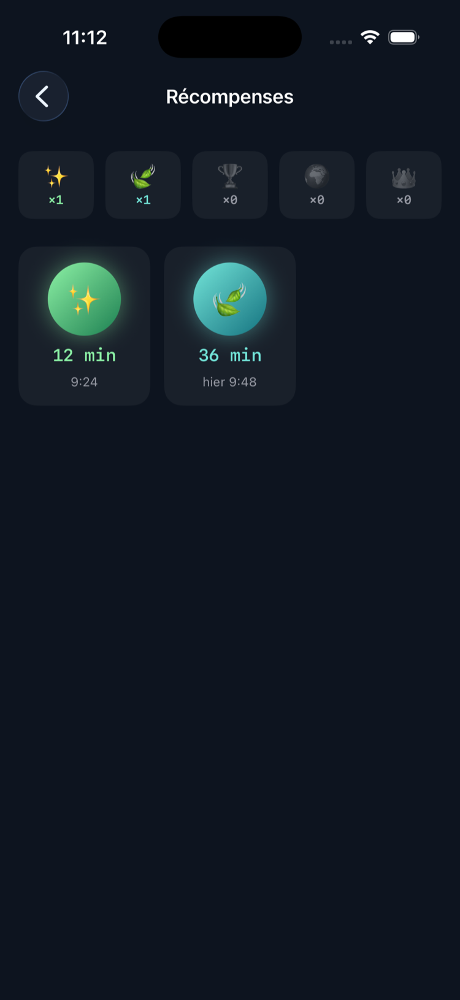
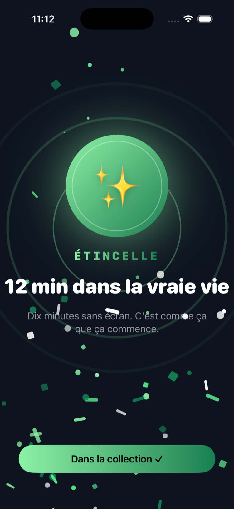
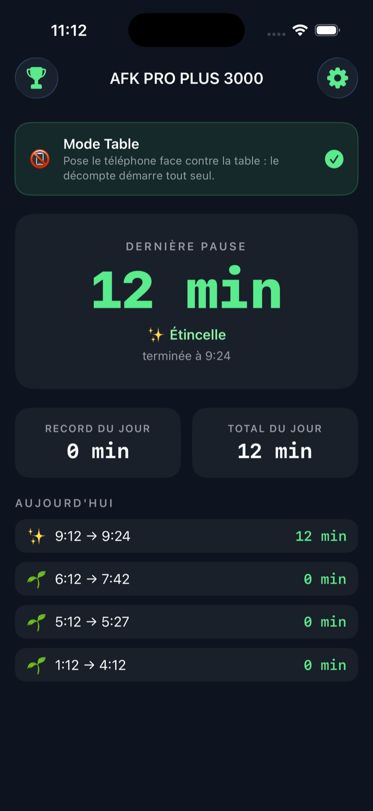

IPHONE · IOS 17+ · TEMPS D'ÉCRAN
Pose ton téléphone. Quand tu le reprends, il te dit combien de temps tu étais dans la vraie vie — et te récompense. La nuit ne compte pas.
Français · English · Slovenščina — aucune donnée collectée
L'APP
Trois écrans, c'est tout.



CE QUE ÇA FAIT
Rien à ouvrir. Rien à configurer.
Dès 10 minutes : ✨ Étincelle, 🍃 Bouffée d'air, 🏆 Vraie Vie, 🌍 Explorateur, 👑 Légende AFK. Chacune avec sa célébration animée.
Grâce à Temps d'écran, une notification arrive pile quand tu reprends ton téléphone après une vraie pause. Rien à ouvrir.
Le sommeil n'est pas un exploit : les heures calmes sont exclues, et une pause qui traverse la nuit repart au matin.
Pose le téléphone face contre la table : le décompte démarre tout seul, l'écran s'éteint, et s'arrête quand tu le relèves.
Sur l'écran verrouillé et l'accueil : « dans la vraie vie depuis 2 h 34 », qui tourne tout seul.
Aucune donnée collectée, aucun compte, aucun serveur. Tout reste sur ton iPhone.
Tu poses le téléphone et tu vis. Quand l'écran se rallume après une longue absence, AFK te félicite pour le temps passé loin des écrans — un petit rappel que la vraie vie continue pendant que le téléphone dort. Super simple.